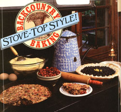

Some chill, hungry day this winter, give this trio of north-country recipes a try, and see if they don't please your palate, warm your body, and infect your spirit with the call of the wild!
Following a trapline some 70 miles through the Alaskan outback in winter-as we've done for several years now-is guaranteed to make you as hungry as a bear. Consequently, one of our favorite indoor winter activities is cooking. But because of the logistical problems created by living a long way from anywhere, both our bush home and our little trapping cabin are equipped with only the most basic of kitchen appliances-a cranky old wood cookstove in the former, and a crude heating stove (fashioned from a cut-down 55-gallon oil drum) in the latter.
So far as food supplies go, we do pretty well as hunter-gatherers: We usually have an abundance of wild berries, game, and fish, as well as vegetables from our summertime garden. But store-bought food-that's another matter entirely. After paying 32 cents per pound to have everything from whole wheat flour to pickle relish flown in to our bush home, we still have to sled the stuff another 24 miles by dog team to our trapping cabin . . . all of which, we sometimes think, should provide great motivation for dieting.
It's of necessity, then, rather than by choice, that our trappers'-cabin meals tend to be simple, one-dish concoctions, each of which provides a couple of hearty dinners and at least one trail lunch before the cast-iron cook pot must be refilled. One of our favorite such meals is moose stew, which is made with cold-stored potatoes, frozen carrots and peas, dried onions and parsley, and ample portions of the main ingredient. Among the more mundane meals are beans and corn bread, fish and rice, and chili with corn patties. Main courses rarely get much fancier than that.
But on lazy days spent around the cabin, we sometimes go all out and make exquisite desserts-such as pudding thickened on the stove top, pies, tortes, or even ice cream placed outside to harden on the cabin roof, safely above the reach of our team of perpetually hungry huskies. (Sometimes, when it's 50-below-nothing outside, we can actually freeze up a batch of ice cream right in the cozy comfort of our cabin, simply by placing the mix in a drafty corner under the table.)
We realize, of course, that few of our fellow MOTHER readers cook exclusively on oil-drum heating stoves or even on wood cookstoves, and fewer yet often have the pleasure of dining on moose stew (a great loss, we assure you). Nonetheless, some of the wholesome, easy-to-prepare, delicious recipes we've come up with to meet the demands of our life in the Alaskan bush can be prepared just as easily on the most modern of kitchen ranges, and are guaranteed to taste every bit as good under any circumstances-modern or Spartan-anyplace in the world. We've chosen three of our favorites, a bread and two desserts, to share with you here.
1 cup yellow cornmeal
1 cup whole wheat flour
2 tablespoons sugar (optional)
1 tablespoon baking powder
1 egg (or 2 tablespoons powdered eggs blended with a little water)
1 cup milk (fresh or reconstituted milk powder)
1/3 cup cooking oil
Mix the dry ingredients. Beat the egg, milk, and oil together, then pour the liquid mixture into the dry mixture and blend with a spoon to batter consistency.
Pour the batter into an oiled and preheated 10" cast-iron frying pan and cook, covered, on a slow stove. If you're using wood heat, elevate the fry pan slightly above the stove's surface by setting it atop the ring from a canning-jar lid. If you're using a gas or electric range, set the burner on low.
Cook for 40 minutes (on a gas or electric appliance) to 2 hours (a slow-burning, woodfired stove can sometimes take that long) until the bread is done, or-if you're anything like us-until you grow tired of waiting and decide to eat it right now, done or not.
1 cup sugar (or less, to suit your taste)
3 tablespoons cornstarch
1/4 cup water (use less if the berries are extra juicy)
2 cups unsweetened berries, fresh or frozen (raspberries or blueberries are excellent)
Blend the sugar, cornstarch, and water, then cook over a slow stove until the mixture becomes thick and clear. Allow the cooked ingredients to cool, then gently stir in the berries.
Finally, pour the filling into a precooked shell and allow the pie to cool for two or three hours (assuming your resolve is stronger than ours and you can stand to wait that long).
A miserly hint: If you're short on berries, you can compensate by half-filling the pie shell with cooked custard, then topping it off with the berry filling.
1 cup whole wheat flour
1 tablespoon baking powder
1/2 cup sugar
1/2 cup powdered eggs [MOM's baker used 1 fresh egg, with excellent results.]
Blend the above ingredients together, then stir in:
1 cup cranberries
1/2 cup melted butter enough milk to turn the mixed ingredients into a thick batter
Now add 1 to 2 cups gorp (a mixture of any kind of trail foods, including, but not restricted to, dried fruit bits, nuts, chocolate or carob chips, minimarshmallows, and shredded coconut).
When stirred together, the above ingredients should make a moist batter (something like a fruitcake mix). If the batter doesn't seem quite right, add more milk, flour, or gorp to suit your taste. (Fear not: This recipe is generously forgiving if the ratio of ingredients is off a bit.)
Now, pour a thin layer of oil across the bottom of a cast-iron skillet and spread the batter evenly across the bottom of the pan. Cover the skillet with a lid or plate.
If you're cooking on a wood-fired stove, use a slow fire and elevate the fry pan slightly above the cooking surface by placing it atop the ring from a canning-jar lid; if cooking with gas or electricity, use a very low flame or the "low" heat setting (you may still want to elevate the pan on a "scorch pad").
After an hour or so, a toothpick stuck into the torte will come out clean, signaling that your Alaskan gorp torte is done.
Safety hint: To avoid mouth injuries, allow the torte to cool slightly before scarfing it down.
If you've never tried cooking atop a woodfired stove-especially a model designed for heating rather than for cooking-give it a try, using one or more of the above recipes (which were, after all, concocted on and for just such an appliance).
A well-tended woodstove in winter can provide you and your family with some of the most pleasant experiences this chilly season has to offer, infusing your home with a quiet, mellow warmth. And by learning to use your woodstove for more than heating, you'll be earning a loyal friend-a friend who'll serve and comfort you for many, many years, providing heat, good food, and warm, glowing companionship.
And all a woodstove asks in return is that you feed it occasionally.
|
 |
|
|